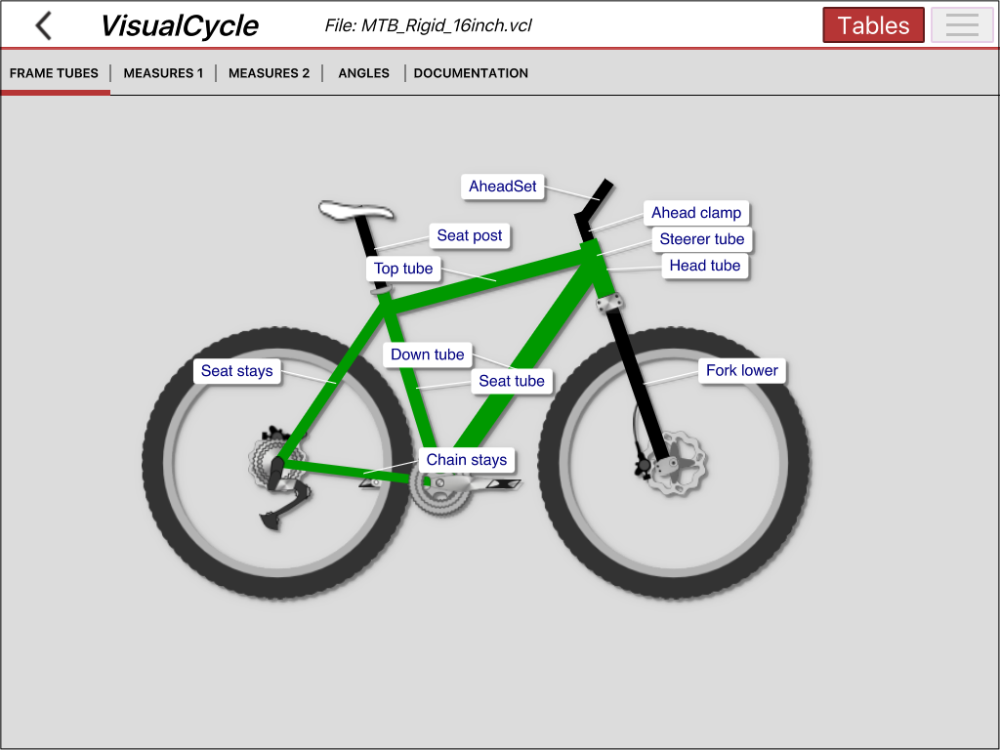
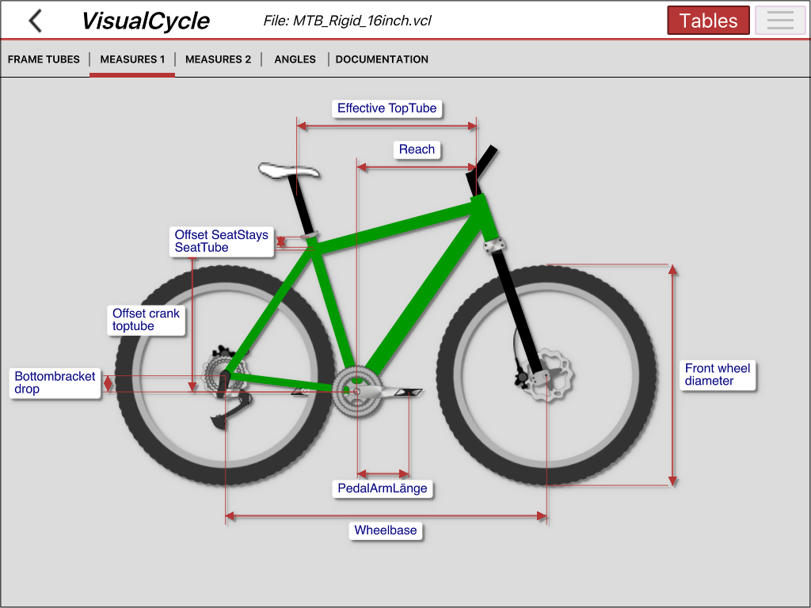
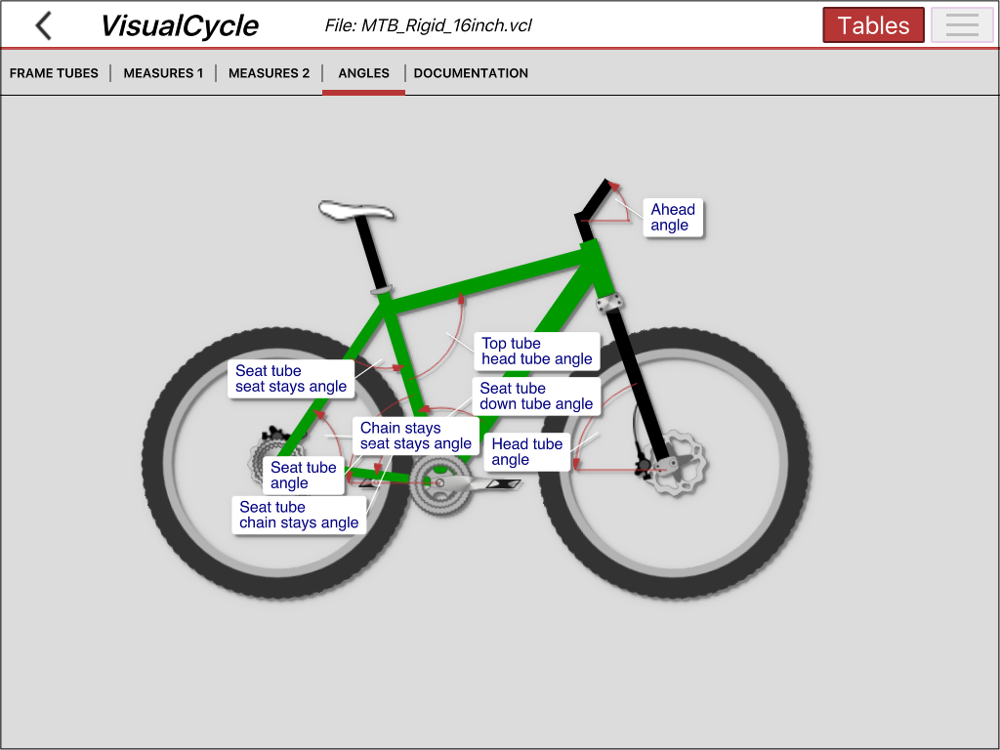

Cycle measures submenu:
Overview
The Cycle measures submenu consists of 5 different parts, which are explaining in detail the different measures of your cycle.
You can activate the measures table with the Tables button at the top. In the measures tables, you can change the cycle frame dimensions and watch the changes instantly displayed right here in the cycle measures views !!
Frame tube:

Other cycle measures:

Frame angles:
View and change frame angles.

Documentation:
In this submenu some more arcane frame measures are explained in more detail. Currently the following measures are explained:
- Seat angle
- Steerer angle
- Trail